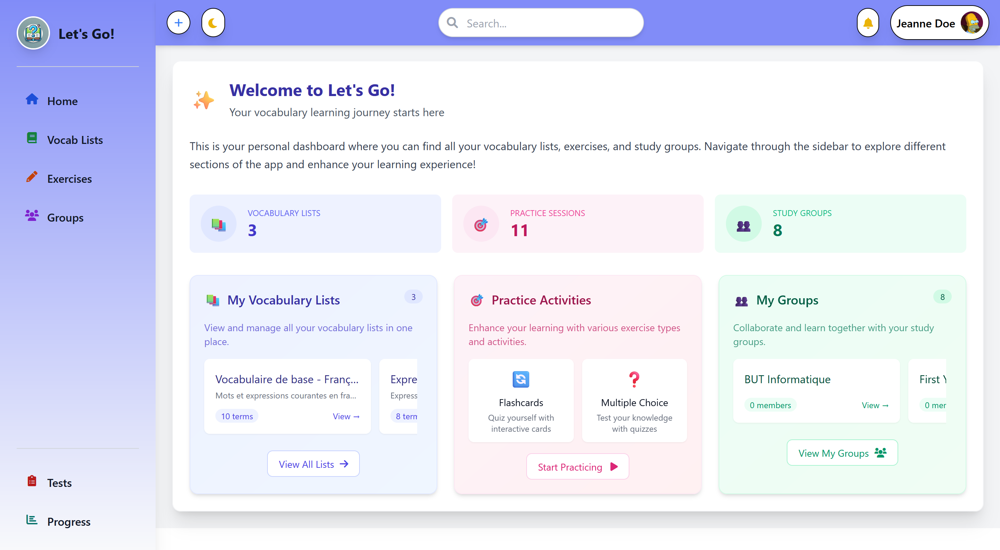
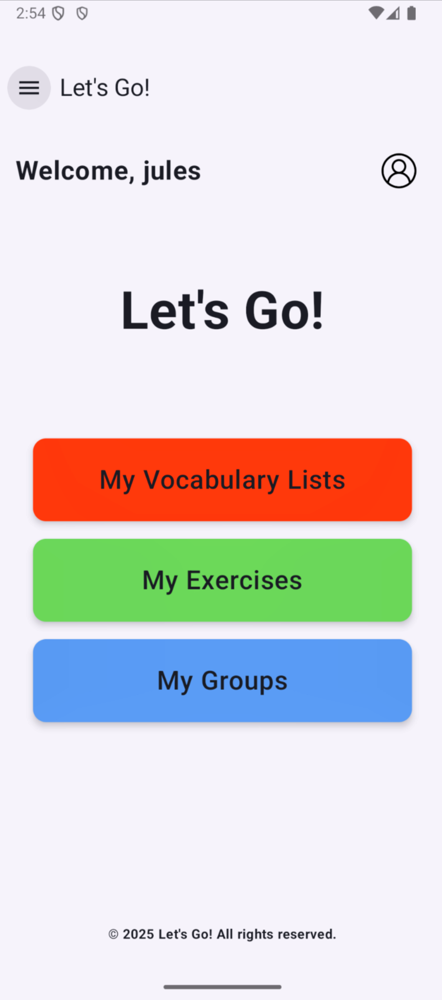

Projet 2ème Année - Développement d'une application
Notre projet Let's Go répond au besoin croissant d'outils gratuits pour l'apprentissage de l'anglais, face aux limitations des applications existantes devenues payantes comme Quizlet. Développée pour les étudiants et enseignants, cette application permet aux professeurs d'importer des listes de vocabulaire depuis Excel ou de les créer manuellement, générant automatiquement des exercices interactifs (flashcards, QCM, memory). Les étudiants peuvent créer leurs propres listes privées, les rendre publiques après validation, et accéder au contenu hors ligne. L'application offre également aux enseignants la possibilité de créer des tests d'évaluation personnalisés à partir des listes existantes.
Pour répondre à ces besoins, notre équipe a développé un écosystème complet comprenant une application web en PHP pour l'interface principale des enseignants, une application mobile Android pour les étudiants, et une API .NET centralisant la logique métier. L'architecture repose sur une base de données relationnelle gérant les utilisateurs, les listes de vocabulaire et les résultats des exercices. Nous avons également créé une interface d'administration Blazor permettant aux administrateurs de gérer les utilisateurs, surveiller l'utilisation de la plateforme et modérer le contenu partagé publiquement.
Page d'accueil de l'application web PHP

Page d'accueil de l'application mobile Android
